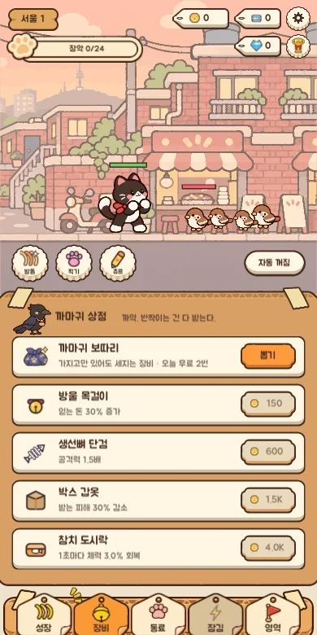
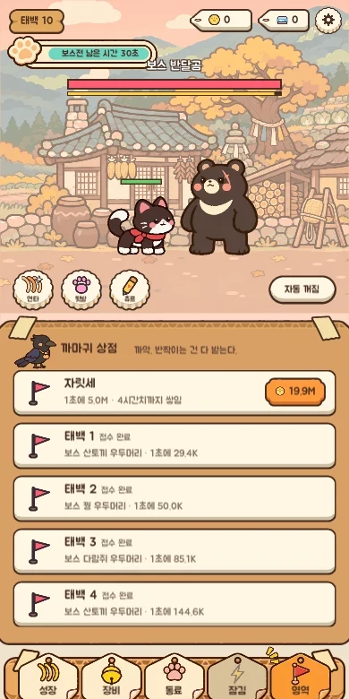

냥아치 키우기
골목부터 세계까지
귀여운 턱시도 길고양이가 동네를 한 구역씩 접수해요. 골목 동물들과 싸워 돈을 벌고, 까마귀 상점에서 강해지고, 보스를 이겨 다음 동네로 가는 세로 화면 방치형 게임이에요.
출시 중 App Store ↗ 보도자료실 →
 게임 소개
게임 소개

우리 동네는 내가 접수한다옹
 플랫폼
플랫폼- iOS
 장르
장르- 방치형 RPG
 상태
상태- 2026년 11월 13일 앱스토어에 나왔어요. Google Play 출시는 준비하고 있어요. 궁금한 점은 메일로 보내 주세요.
 방침
방침- 개인정보처리방침
 문의
문의 숫자로 보는 냥아치
숫자로 보는 냥아치
- 13지역
- 390스테이지
- 10동료
- 5스킨

동네 짐승은 패서 이겨요
비둘기·들개부터 반달곰까지, 한국과 대만에 실제로 사는 동물 약 90종이 상대와 대장으로 나와요. 대장은 직접 두들겨 패서 이겨야 그 구역을 접수해요.

한국 여덟 지역, 대만 다섯 곳, 모두 390스테이지
지역마다 풍경도, 나오는 동물도, 기다리는 대장도 달라요. 접수한 동네에서는 꺼 둔 동안에도 자릿세가 8시간치까지 쌓여요.
한국
- 서울
- 경기
- 충청
- 전라
- 경상
- 부산
- 강원
- 태백
대만
- 타이베이
- 타이중
- 시뤄
- 타이난
- 가오슝
기다리는 대장들
- 뚱냥이 왕초
- 너구리 두목
- 황소개구리 대장
- 반달곰
바다 건너 대만으로
태백까지 한국을 다 접수하면 상자 속에서 잠든 채 배에 실려 대만으로 가요. 타이베이부터 가오슝까지, 곳마다 가장 센 패거리에게 싸움을 걸어 꺾어요. 대만에서 만난 새 동료 다섯도 영입해 함께 싸워요.

한국 다섯, 대만 다섯. 고양이만 있는 게 아니에요. 세 마리까지 데리고 다니며 함께 싸우고, 쉬는 동료를 파견 보내면 보따리를 챙겨 와요.
 치즈뛰어올라 앞발로 덮쳐요
치즈뛰어올라 앞발로 덮쳐요 짹이하늘에서 부리로 내리꽂아요
짹이하늘에서 부리로 내리꽂아요 도토리싸워서 얻는 돈이 늘어나요
도토리싸워서 얻는 돈이 늘어나요 콩이느리지만 묵직한 박치기
콩이느리지만 묵직한 박치기 삼색이사람이 주는 돈이 늘어나요
삼색이사람이 주는 돈이 늘어나요 란란발톱으로 낚아채요
란란발톱으로 낚아채요 루루목을 움츠렸다가 부리로 콕
루루목을 움츠렸다가 부리로 콕 뉴뉴느리지만 아주 묵직한 뿔 박치기
뉴뉴느리지만 아주 묵직한 뿔 박치기 스후멀리 뛰어올라 덮쳐요
스후멀리 뛰어올라 덮쳐요 허우바나나를 휙 던져요
허우바나나를 휙 던져요

주간 레이드
쓰러지지 않는 거대 보스 "집채 황소"를 정해진 시간 동안 힘껏 때려요. 넣은 피해로 한 주 순위를 겨뤄요.
스킨: 턱시도 · 치즈 · 봄베이 · 노르웨이숲 · 페르시안
 01
01싸워서 벌고, 보스를 꺾어요
골목 동물들과 싸워 돈을 벌어요. 충분히 강해지면 보스에게 도전해 다음 스테이지로 가요.

02까마귀 상점에서 강해져요
반짝이는 건 다 받는 까마귀 상점에서 발톱과 체력, 장비를 키워요.
 03
03동료를 모아 자릿세를 받아요
접수한 구역에서는 자릿세가 쌓여요. 동료를 파견하면 자리를 비운 동안에도 더 많이 모여요.

04서울 골목에서 태백 산골까지
도심 골목에서 시작해 시골 들판을 지나 산골까지 가요. 지역마다 이름 있는 보스가 기다려요.
화면은 업데이트로 달라질 수 있어요.
영상
2- 기술 모음
- 골목 사람들